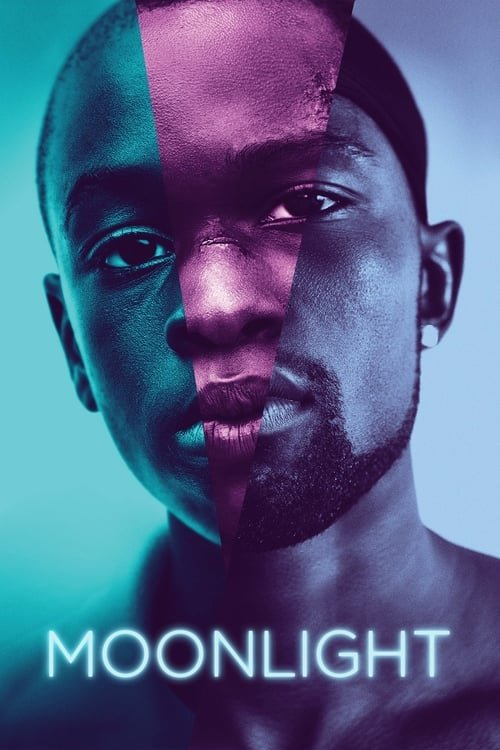

Moonlight (2016)
Sinopsis Rápida
Tres capítulos de la vida de Chiron, un joven afroamericano que lucha contra la identidad, la sexualidad y la adversidad en un ambiente hostil. ¿Sobrevivirá a la oscuridad para encontrar su propia luz?
Sinopsis Detallada
Moonlight narra la historia de Chiron en tres etapas cruciales de su vida: la infancia, la adolescencia y la adultez. La película explora temas de identidad sexual, masculinidad negra, abandono y la búsqueda de pertenencia en un contexto social marcado por la violencia y la pobreza. La narrativa sensible y visualmente impactante, a través de un estilo poético y minimalista, deja una huella profunda en el espectador. El drama se centra en el crecimiento personal y la compleja formación de su identidad en un entorno desfavorable. La película es una obra maestra de la cinematografía moderna que cuestiona las convenciones y aborda temas esenciales de la condición humana.
¿Por qué tenés que verla?
- Una historia conmovedora y profundamente humana que te tocará el corazón.
- La dirección precisa y la fotografía evocadora contribuyen a la atmósfera poética.
- Moonlight ha recibido numerosos premios y reconocimientos, incluyendo el Oscar a Mejor Película.
- Representación auténtica y compleja de la experiencia afroamericana LGBTQ+.
Idea Extra
Análisis de la simbología del agua y la luz en Moonlight: cómo reflejan el viaje emocional de Chiron.
{{CONTENIDO_RELACIONADO}}